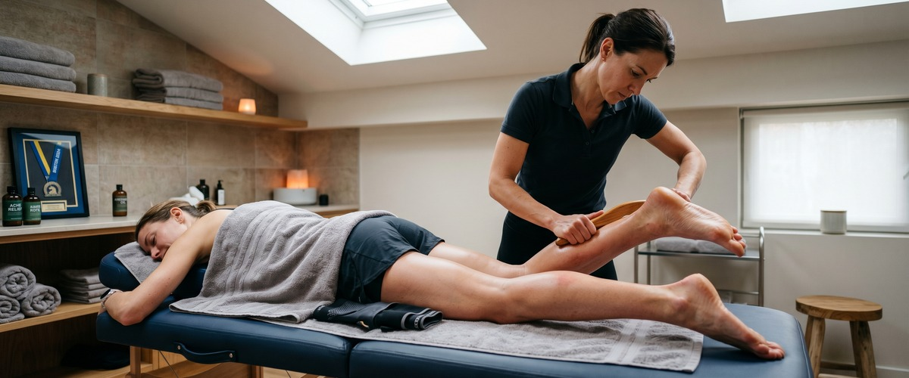
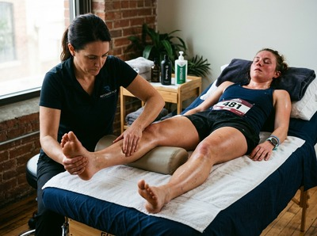

You crossed the finish line.

Your legs feel like wet concrete, your medal is around your neck, and the crowd noise is still ringing in your ears. Whether you ran the AJ Bell Great Scottish Run half marathon on 4 October or tackled a full marathon earlier in the season, one thing is certain: what you do in the days after race day matters just as much as the weeks of training that got you there. Recovery isn't passive. It's the part of your training plan most runners underestimate, and getting it right is what separates runners who bounce back strong from those who limp into winter carrying niggles that never quite go away.
The immediate post-race window is about damage limitation, not repair. Your muscles are loaded with microscopic tears, your glycogen stores are depleted, and your body's inflammatory response is in full swing.
This is not the time for an ice bath, a heroic walk around the city, or a deep sports massage.

Focus on three things: rehydration, refuelling, and rest. Eat a proper meal with carbohydrates and protein within 60 minutes of finishing if you can manage it. Keep moving gently, but resist the temptation to "walk it off" aggressively.
Compression socks can support circulation in the calves and feet during this window. That's particularly useful if you're commuting home on the subway from the race finish.
Sleep is your most powerful recovery tool in these first two days. Prioritise it above everything else.
Between 24 and 72 hours after your race, your body shifts from acute inflammation into the early stages of repair. This is the window where a professional Thai sports massage becomes genuinely useful rather than counterproductive. It's a targeted treatment designed to restore muscle function and accelerate recovery.
A sports massage at this stage works on restoring circulation to fatigued tissue and clearing metabolic waste products. It also helps identify areas of tightness that could develop into longer-term problems if left unaddressed.
For runners, the usual suspects are the calves, hamstrings, IT band, and hip flexors. A good therapist will work through all of these methodically.
If you've not booked ahead, now is the time. You can book a session online at Glasgow Thai Massage and get the right treatment at the right point in your recovery timeline.
Most runners think of massage as purely about releasing tight muscles. Thai massage does that, but it also does something the foam roller in your hallway cannot: it works through assisted stretching and joint mobilisation that addresses the entire kinetic chain, not just individual muscles.
Running is a repetitive, integrated movement. Every stride involves the foot, ankle, calf, knee, hip, and lower back working in sequence. When one link in that chain seizes up after a race, it pulls on everything connected to it.
Traditional Thai massage is a floor-based technique using acupressure along the body's sen energy lines combined with deep assisted stretches. It restores range of motion across the whole body rather than targeting isolated muscles one at a time.
For Glasgow runners dealing with the cumulative stiffness of a full training block, that systemic approach makes a noticeable difference. It also helps the nervous system shift out of the heightened state that months of training demands. That's why many runners report sleeping significantly better after a session.
Most runners underestimate how long full physiological recovery takes after a half or full marathon. The general guideline among sports physiologists is one easy day per mile raced before returning to structured training. That means two weeks of active recovery for a half marathon, and closer to four for a full.
Active recovery during this period should include gentle walking, light mobility work, and at least one further massage session in the second week. A Thai oil massage works particularly well at this stage. It combines therapeutic technique with warmed oils to ease lingering muscle soreness and promote deep tissue repair — exactly what the body needs once the acute phase has passed.
Pay attention to your sleep and nutrition too. Protein intake supports the ongoing repair of muscle tissue. Anti-inflammatory foods including oily fish, berries, and leafy greens support the body's natural healing response.
This isn't about following a rigid plan. It's about giving your body the raw materials it needs to do its job.
The weeks after a big race can feel surprisingly flat. You've spent months with a clear goal, a structured plan, and a finish line to aim at. When that's gone, the psychological drop can be sharper than runners expect.
This is sometimes called post-marathon blues, and it's far more common than the running community tends to acknowledge.
Regular massage during this period serves a dual purpose. It supports physical recovery, but it also gives you a scheduled reason to slow down, be looked after, and process the achievement.
An hour at Glasgow Thai Massage is not just an hour away from your training log. It's an hour where your body gets the full attention it's earned.
Glasgow's running season builds toward October, which means right now, in late April, many runners are deep in their training blocks. If recovery is already feeling like an afterthought in your preparation, it's worth changing that before race day rather than after.
The ideal window for a sports or Thai massage is between 24 and 72 hours after your race. In the first 24 hours, your muscles are acutely inflamed and a deep treatment can aggravate rather than help. From day two onward, massage helps restore circulation, clear metabolic waste, and address tightness before it becomes a longer-term problem. A second session in week two of recovery is also highly beneficial as the body continues to repair.
Thai massage is exceptionally well suited to runners because it works on the entire body through assisted stretching, joint mobilisation, and acupressure rather than focusing on isolated muscles. Running is a repetitive movement that loads the calves, hamstrings, hip flexors, and lower back simultaneously, and Thai massage addresses the whole kinetic chain in a single session. It also helps the nervous system downshift from training stress, which supports both recovery and sleep quality.
A useful rule of thumb is one easy recovery day per mile raced, which puts full recovery from a half marathon at roughly two weeks. This doesn't mean two weeks on the sofa; it means two weeks of gentle movement, good sleep, proper nutrition, and no structured speed work or long runs. Many runners return to training too quickly and carry minor niggles into the next block as a result. Booking a massage session in week one and another in week two is a good way to structure that recovery period.
Post-marathon blues is a well-recognised dip in mood that can follow a big race, caused by the sudden removal of a goal that has structured your life for months alongside the hormonal changes that follow intense physical effort. Managing it involves giving yourself planned activities to look forward to during the recovery period, staying connected to your running community, and treating recovery as an active priority rather than empty time. Regular massage sessions, good nutrition, and gentle movement all help stabilise mood during this window.
Absolutely. A pre-race sports massage in the week before your race can help reduce muscle tension, improve range of motion, and support a relaxed, well-prepared body on race day. The session should be lighter in pressure than a post-race treatment. Many Glasgow runners build both a pre-race and post-race appointment into their schedule as standard practice. You can book online at Glasgow Thai Massage and discuss your race timeline when you arrive so the treatment is tailored to exactly where you are in your training cycle.